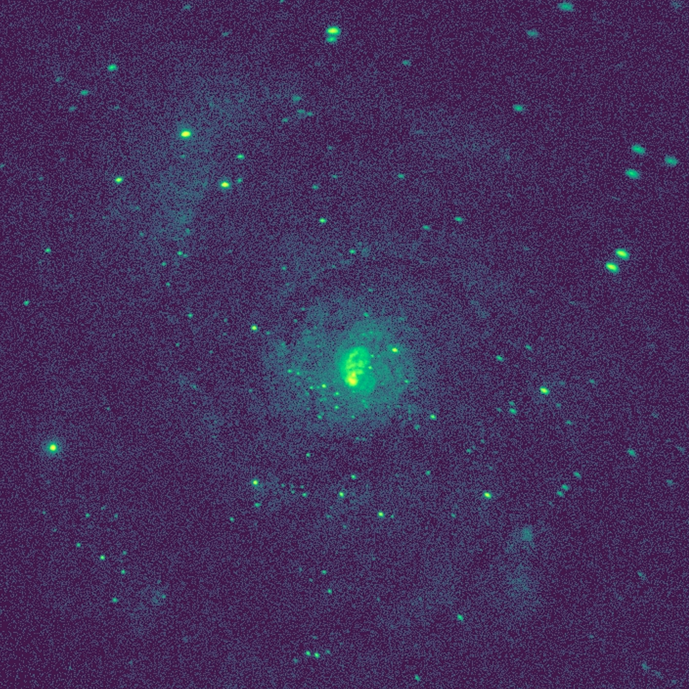
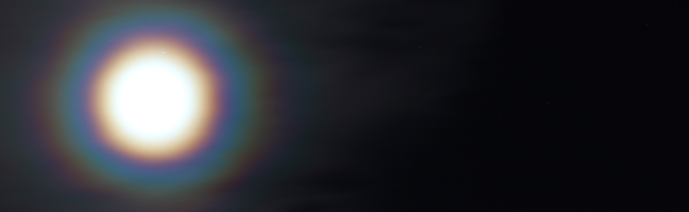
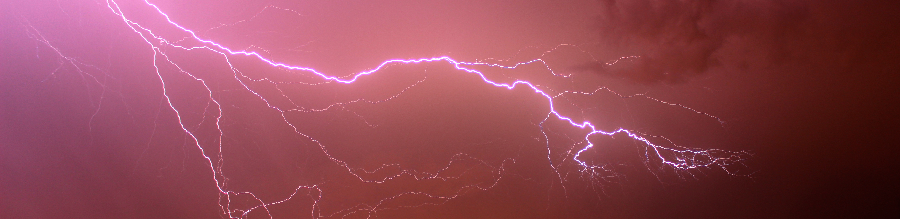
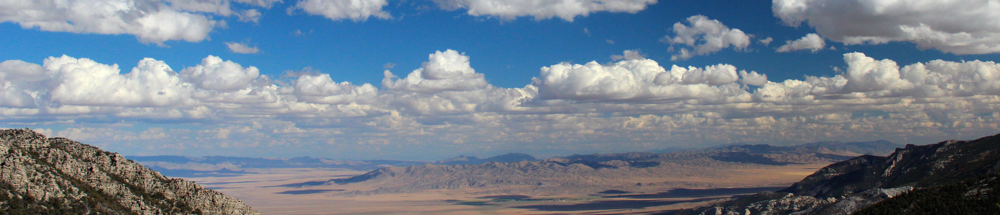
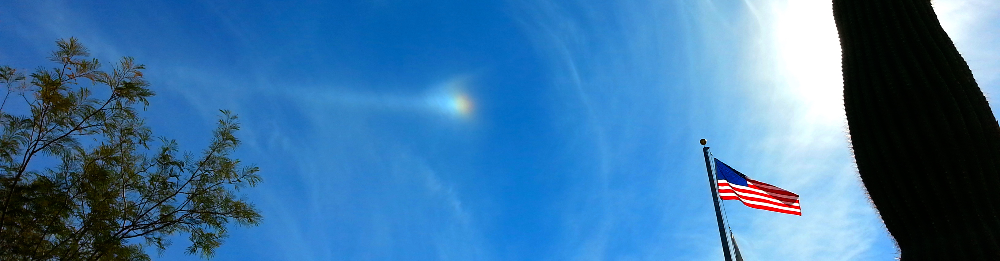
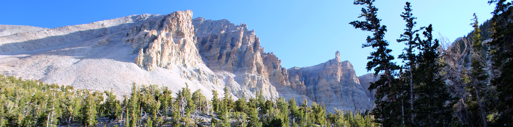
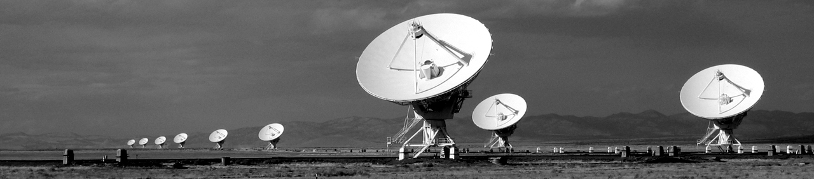

About Me

M51, Chandra X-ray Observatory; image processing by J. Rice
I am honored to have been commissioned as a second lieutenant in the United States Space Force.
Previously I was an Assistant Professor of Physics, Astronomy, and Mathematics at Southwestern Adventist University (SWAU) in Keene, TX. The position started in the fall of 2022 and I left in the spring of 2025. I am grateful and blessed to have made an impact in the short time I was there.
Prior to that I was a postdoctoral research associate at Texas State University working with Prof. Blagoy Rangelov on a variety of topics in observational high-energy astrophysics. We study X-ray binaries in M51 with Chandra X-ray Observatory and the Hubble Space Telescope. We also study optical counterparts of X-ray sources in various starforming galaxies with Chandra and HST.
I also collaborate with Prof. Bing Zhang (my PhD advisor) at the University of Nevada, Las Vegas on theoretical high-energy astrophysics. We study primordial black holes, black hole accretion, and electromagnetic counterparts of binary supermassive black hole mergers.
I also collaborate with Dr. Robert Zavala (United States Naval Observatory Flagstaff Station) and Prof. Greg Taylor (University of New Mexico) on Very Long Baseline Array (VLBA) imaging of AGN cores and jets. We have used the VLBA to image two AGN cores for ten hours each to quantify the core-shift effect in these bright radio sources.
I am also working on understanding the formation and evolution of short and long gamma-ray bursts and their afterglows through their electromagnetic and gravitational-wave emission mechanisms.
Curriculum Vitae
Sunrise, Santa Cruz, CA, 2006; J. Rice
Curriculum Vitae [ pdf ]
Publications

Lunar corona, Las Vegas, NV, 2016; J. Rice
Highlights
- ADS entries: 15
- First author entries: 4
- Refereed papers: 14
- Refereed first author papers: 4
Citations

Cloud to cloud lightning, Las Vegas, NV, 2013; J. Rice
Highlights
- Total citations: 322
- First author (FA) citations: 82
- h-index: 9
- hFA-index: 3
- m-index: 0.8 (h-index has increased by 0.8 yr −1 on average)
- g-index: 17 (top 17 papers received at least 17 2 = 289 total citations)
- i10-index: 9 (number of papers with at least 10 citations)
- i100-index: 0 (number of papers with at least 100 citations)
Research

Great Basin National Park, NV, 2016; J. Rice
I am a high-energy astrophysicist and am interested in the electromagnetic and gravitational-wave radiation signatures of compact object systems in the universe. I am a theorist by training, but am now also working in X-ray, optical, and radio astronomy. In my postdoctoral research position, I used the Chandra X-ray Observatory and Hubble Space Telescope to study all the X-ray point sources in the Whirlpool Galaxy/M51 (J. Rice, B. Rangelov, et al. I 2021, and J. Rice, B. Rangelov et al. II 2021, in prep).
I am broadly interested in accreting black hole systems (Rice and Zhang 2021) and primordial black holes (Rice and Zhang 2017) as cosmological probes.
The most exciting astronomy news of the last decade was the confirmation of the existence of black holes through the LIGO discovery of gravitational waves from the merging black hole binary GW150914. I am interested in the electromagnetic counterparts of supermassive black hole mergers, which may be visible by a number of future observatories.
Teaching

Parhelion and partial parhelic circle, 2016; J. Rice
I had great fun teaching a variety of astronomy and physics laboratory and lecture courses from 2009-2025 as a graduate teaching assistant, adjunct instructor, and an assistant professor. Currently I do not have any teaching duties in the United States Space Force.
My teaching experience is segmented into four time periods: as a graduate teaching assistant at Montana State University in Bozeman, MT, as an adjunct instructor of physics at Miami University in Oxford, OH, as a graduate teaching assistant at the University of Nevada, Las Vegas in Las Vegas, NV, and as an assistant professor at Southwestern Adventist University in Keene, TX. I have taught the following:
Southwestern Adventist University: 2022-2025
- Introductory astronomy + laboratory: 6 sections
- Introductory physics + laboratory: 9 sections
- College Algebra + College Algebra online: 17 sections
University of Nevada, Las Vegas: 2013-2018
- Introductory astronomy laboratory: 14 sections
- Introductory physics laboratory: 6 sections
Miami University: 2012-2013
- Calculus-based physics I (classical and quantum mechanics) lecture: 2 sections
- Calculus-based physics II (E&M, thermodynamics, relativity) lecture: 3 sections
Montana State University: 2009-2012
- Introductory physics laboratory: 8 sections
- Intermediate physics laboratory: 3 sections
- Intermediate astronomy laboratory: 6 sections
News

Bristlecone pine grove, Great Basin NP, NV, 2016; J. Rice
2025
- October: Commissioned as a brand new second lieutenant in the United States Space Force after the 60-day Officer Training School at Maxwell Air Force Base, Montgomery Alabama.
Contact

Very Large Array panorama, 2009; J. Rice
ORCID : 0000-0003-3887-091X